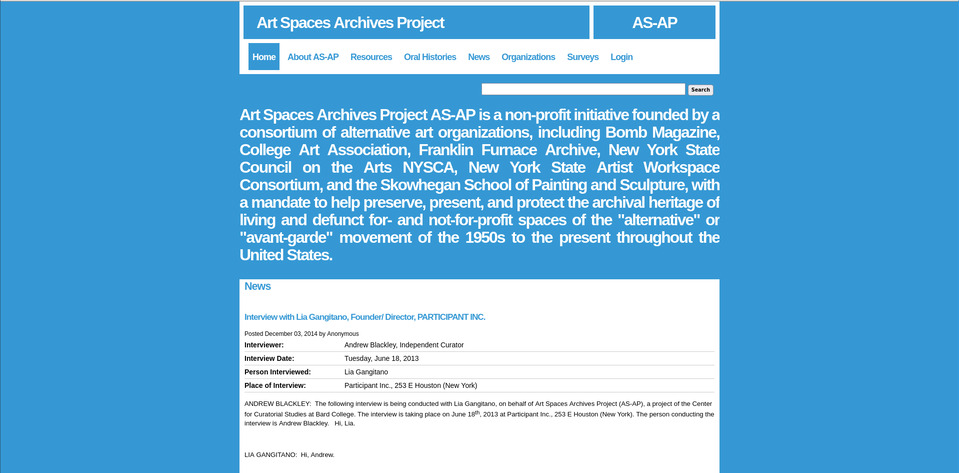
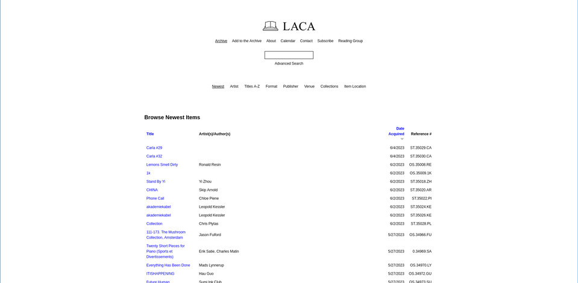
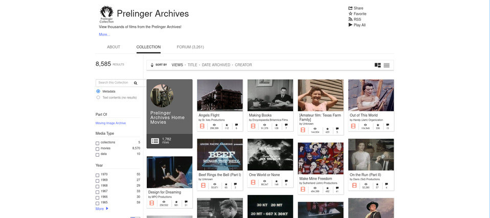
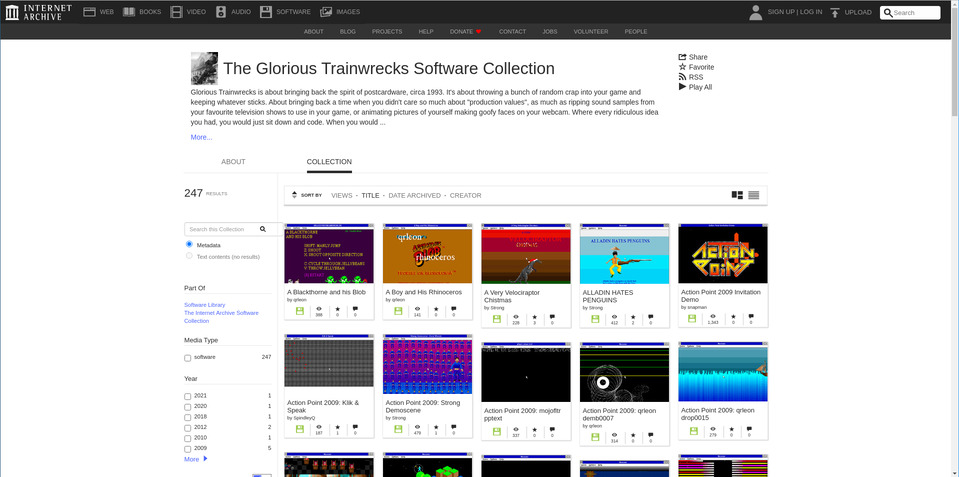

Archives
A personally-collected list of digital archives of artist-run spaces, alternative spaces, DIY print and digital archives and collections, and digitally-born online-only digital creative art-making communities.

AS-AP on Internet Archive

Los Angeles Contemporary Archive (LACA)

Prelinger Archives

The Glorious Trainwrecks Software Collection